Workshop Manual ➭ TRANSMISSION/TRANSAXLE ➭ AUTOMATIC TRANSMISSION[SJ6A-EL] ➭ TRANSMISSION RANGE (TR) SWITCH REMOVAL/INSTALLATION [SJ6A-EL]
TRANSMISSION RANGE (TR) SWITCH REMOVAL/INSTALLATION [SJ6A-EL]
id051311710200
Caution• Water or foreign material entering the connector can cause poor connections or corrosion. Be sure that water or foreign material do not enter the connector when disconnecting it.
1. Remove the battery cover.
2. Disconnect the negative battery cable. (See BATTERY REMOVAL/INSTALLATION [L8, LF].)
3. Remove the tunnel member component.
4. Remove the middle pipe.(See EXHAUST SYSTEM REMOVAL/INSTALLATION [L8, LF].)
5. Remove the insulator.
|
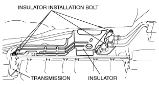 e5u513zw5005 |
6. Mark the manual shaft lever component as shown in the figure.
|
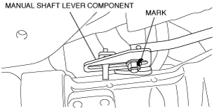 e5u513zw5007 |
7. Separate the manual shaft lever component from selector lever.
8. Disconnect the TR switch connector.
|
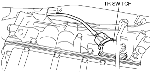 e5u513zw5006 |
9. Rotate the manual shaft to the N position.
Caution• Do not use an impact wrench. Hold the manual shaft lever when removing the manual shaft nut, otherwise the transmission may be damaged.
10. Set the adjustable wrench as shown in the figure to hold the manual shaft lever.
|
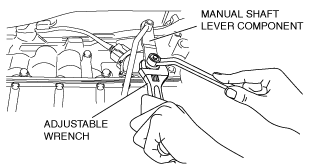 e5u513zw5008 |
11. Remove the manual shaft nut.
12. Remove the washer and manual shaft lever component.
|
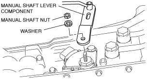 e5u513zw5009 |
13. Pry off the lock washer using a flathead screwdriver.
|
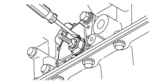 amxzzw00004261 |
14. Remove the nut and lock washer.
|
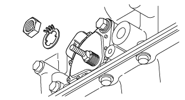 amxzzw00004262 |
15. Remove the TR switch.
|
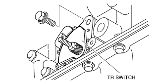 e5u513zw5036 |
16. Rotate the manual shaft to the extension housing side fully and return two notches to set the N position.
|
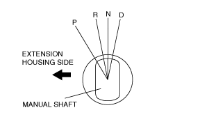 chu0513w014 |
17. Install the TR switch and hand-tighten the new mounting bolts.
Caution• Improper adjustment of the TR switch will cause abnormal operation of the automatic transmission. Be sure to adjust the TR switch correctly.
18. Verify the TR switch reference line and the notch of the manual shaft are aligned.
|
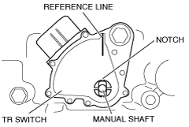 e5u513zw5081 |
19. Install the lock washer with the nut.
|
amxzzw00004262 |
Tightening torque
5.9—7.8 N·m {61—79 kgf·cm, 53—68 in·lbf}
20. Stake the lock washer using a flathead screwdriver.
|
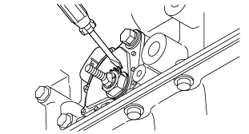 amxzzw00004263 |
21. Tighten the TR switch mounting bolts.
Tightening torque
9.8—15.7 N·m {100—160 kgf·cm, 87—138 in·lbf}
22. Inspect for continuity between TR switch terminals E and H.
|
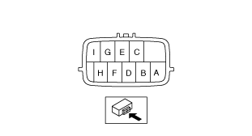 amxzzw00004264 |
23. Install the manual shaft lever component and washer.
Caution• Do not use an impact wrench. Hold the manual shaft lever when tightening the manual shaft nut, otherwise the transmission may be damaged.
24. Set the adjustable wrench as shown in the figure to hold the manual shaft lever.
|
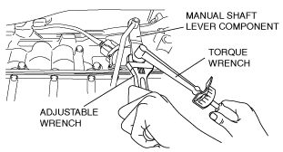 e5u513zw5010 |
25. Tighten the manual shaft nut using a torque wrench.
Tightening torque
14—18 N·m {1.5—1.8 kgf·m, 11—13 ft·lbf}
26. Shift the selector lever to the P position.
27. Turn the manual shaft lever to the P position.
28. Inspect TR switch continuity. (See TRANSMISSION RANGE (TR) SWITCH INSPECTION [SJ6A-EL].)
29. Connect the TR switch connector.
30. Align the mark of the manual shaft lever component as shown in the figure.
|
e5u513zw5007 |
31. Install the manual shaft lever component installation nut.
Tightening torque
10.8—14.7 N·m {111—149 kgf·cm, 96.4—129.3 in·lbf}
32. Install the insulator.
Tightening torque
8—11 N·m {82—112 kgf·cm, 72—97 in·lbf}
33. Install the middle pipe. (See EXHAUST SYSTEM REMOVAL/INSTALLATION [L8, LF].)
34. Install the tunnel member component.
35. Connect the negative battery cable. (See BATTERY REMOVAL/INSTALLATION [L8, LF].)
36. Install the battery cover.
37. Inspect TR switch operation. (See TRANSMISSION RANGE (TR) SWITCH INSPECTION [SJ6A-EL].)